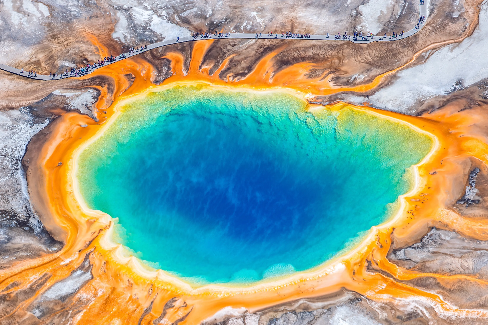

Yellowstone National Park

If there is one place that you really have to see in Yellowstone, it is the colorful Grand Prismatic Spring, the star of the Midway Geyser Basin. It is not only the largest hot spring in the United States (and the third largest in the world), but also one of the most unique natural wonders on the planet. It is also the best recognized and most photographed landmark of Yellowstone. No matter how many times you saw the Grand Prismatic on pictures, it's only when you stand there that you realize how large it actually is. It's bigger than a football field and deeper than a 10-story building.
-fullsuitcase.com